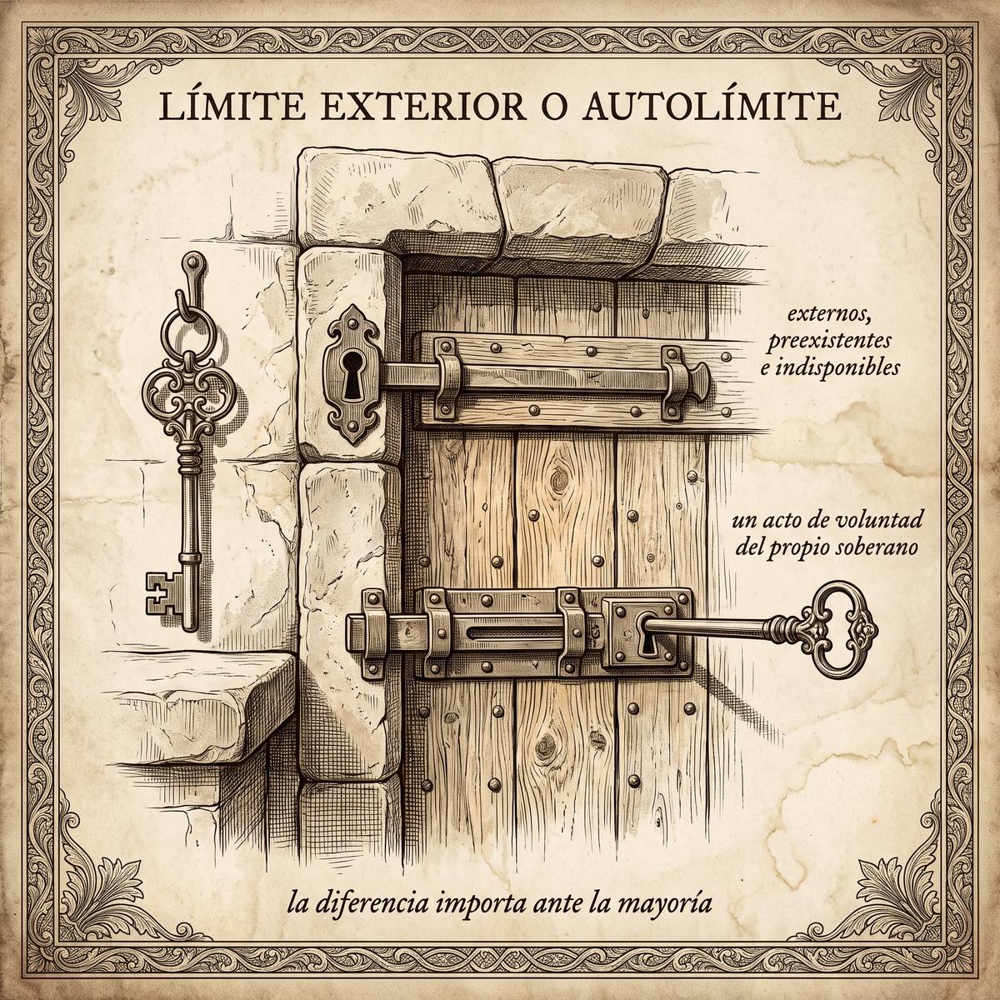

Filosofía del Derecho
Subpuntos 2.3.1 a 2.3.5 · El Estado de Naturaleza · Justificación del Estado · Democracia · Liberalismo Político · El poder limitado
Un límite que viene de fuera, no un favor que se hace a sí mismo
El estado de naturaleza nunca existió como hecho histórico, y aun así es el recurso argumentativo más usado de la filosofía política. Este apartado recorre para qué sirve esa ficción, qué justifica cada variante del contrato, por qué la democracia resiste mejor de lo que sus defensores suelen argumentar, y termina en la pregunta que más importa cuando quien gobierna tiene mayoría: si el límite al poder viene de fuera o el poder se lo pone a sí mismo.
Prof. Carlos Eduardo Chica-Villacís Docente autor · Universidad Católica de Cuenca
a · El estado de naturaleza como recurso, no como hecho
Conviene advertirlo antes de nada: el estado de naturaleza no es una hipótesis histórica. Méndez Pinto y Bárcena Juárez lo describen como un recurso de representación teórica, una simulación racional que no responde a cómo nació de hecho el Estado, sino a cómo se justifica normativamente su existencia y el deber de obedecer sus leyes.
Vichinkeski Teixeira, recogiendo a Zarka, lo formula de un modo que ayuda a fijar la idea: es una simulación teórica que modela cómo se comportarían los seres humanos en ausencia o destrucción del Estado. No se pregunta qué pasó; se pregunta qué pasaría, y de esa respuesta se extraen razones para obedecer o para exigir algo distinto.
b · Tres contratos, tres justificaciones distintas
El contractualismo no es una sola doctrina: es un método que produce conclusiones muy distintas según qué se suponga del ser humano antes del pacto. Méndez Pinto y Bárcena Juárez distinguen tres variantes clásicas, y conviene retener la fórmula porque ordena todo el apartado: tres contratos, tres justificaciones. Cada variante está atada a lo que su respectivo contrato justifica.
| Variante | El ser humano antes del pacto | Alcance del contrato | Qué justifica |
|---|---|---|---|
| Hobbesiana | amoral, dominado por pasiones, guerra de todos contra todos | total: se transfieren todos los derechos | obediencia incondicional al soberano |
| Lockeana | sujeto a la ley moral natural, sin poder imparcial que la haga cumplir | parcial | la propiedad: vida, libertad y bienes |
| Rousseauniana | pacífico en origen, corrompido por la propiedad privada | enajenación a favor de la voluntad general | la libertad positiva |
La fórmula rousseauniana merece una palabra aparte porque es la más contraintuitiva: obedecer la ley que uno mismo contribuye a crear no es dejar de ser libre, es la única forma en que la libertad puede coexistir con la vida en sociedad. El ciudadano que obedece la voluntad general no obedece a otro; se obedece a sí mismo.
![Lámina cuadrada a tinta sepia. Sobre una mesa redonda de madera vista desde arriba se abren en tridente tres documentos completamente en blanco, cada uno terminando en un objeto distinto. El de arriba llega a una corona apoyada sobre un cojín, con una cadena corta que la ata a un anillo fijo clavado en la mesa. El de la izquierda llega a una llave grande de hierro apoyada sobre un cofre cerrado con candado. El de la derecha llega a un haz de varas finas atadas juntas con una cinta. En el borde del tablero, tres siluetas humanas esquemáticas y sin rasgos están talladas en la propia madera: una encorvada, una erguida con los brazos cruzados y otra con los brazos extendidos.](Ilustraciones/B2_lamina11_tres_contratos.jpeg)
c · De dónde nace la soberanía
Vichinkeski Teixeira muestra cómo las tesis contractualistas permitieron desvincular la soberanía estatal de justificaciones puramente fácticas —el poder existe porque puede imponerse— y darle una legitimidad de otro tipo. El punto de partida absolutista está en Maquiavelo y Bodin; lo que cambia con el contractualismo es cómo se justifica ese poder, no que exista.
En Hobbes, la soberanía nace como una autorización vertical, indivisible e irrevocable a favor del monarca, cuya única función es asegurar la paz. En Locke se descentraliza: se convierte en un equilibrio de poderes limitados y autorizados por la constitución, y el ciudadano conserva el derecho a resistir si el poder traiciona la confianza depositada en él. En Rousseau reside directamente en el pueblo y es inalienable e indivisible —el poder puede transmitirse, pero la voluntad, nunca.
Tres orígenes de la misma palabra. La diferencia entre ellos no es de grado: es de a quién se le puede exigir cuentas y por qué vía.
Apartado elaborado a partir de Vichinkeski Teixeira (2014). Maquiavelo, Bodin, Hobbes, Locke y Rousseau llegan expuestos por él.d · Defender la democracia sin hacer apología
Ródenas no escribe un elogio de la democracia. Ordena los argumentos que existen a su favor en dos familias —las justificaciones procedimentales, que valoran el procedimiento en sí mismo por respetar la autonomía y la dignidad de cada persona, y las instrumentales, que la valoran por su tendencia a producir decisiones racionales y eficaces— y después usa esa ordenación para desactivar dos falsos dilemas.
El primero presenta el valor procedimental y el instrumental como incompatibles, como si hubiera que elegir entre ellos. Ródenas muestra que responden a pretensiones distintas: el argumento procedimental atiende la pretensión de exclusividad —por qué este procedimiento y no otro—, el instrumental atiende la pretensión de corrección —por qué sus resultados merecen seguirse—. No compiten porque no responden a la misma pregunta.
e · Rawls bajo la lectura de Nussbaum
Nussbaum examina el liberalismo político de Rawls, una concepción que se presenta como independiente: no depende para justificarse de ninguna doctrina comprehensiva metafísica, epistemológica o religiosa en particular. Sostiene dos pilares. El consenso superpuesto es el acuerdo por el que ciudadanos con doctrinas comprehensivas distintas aprueban, cada uno desde la suya, los mismos principios públicos de justicia. La razón pública es el deber de civilidad que exige justificar las posturas propias con razones que todos puedan compartir, y no con dogmas de fe privados.
La objeción de Nussbaum, que recupera de Susan Moller Okin, señala una asimetría incómoda. Rawls proscribe como irrazonables las doctrinas que defienden la esclavitud o la segregación racial. En cambio, en asuntos de género acepta como razonables religiones tradicionales de contenido claramente patriarcal. Según Okin, esa diferencia de trato debilita el principio de igual dignidad que el liberalismo político dice sostener: si una doctrina que subordina por raza queda fuera del consenso, una que subordina por sexo debería correr la misma suerte.
Apartado elaborado a partir de Nussbaum (2014). Okin llega expuesta por ella.f · La legalidad como límite general del poder
Peña Freire parte de la legalidad entendida como el intento de someter de forma efectiva el comportamiento humano al gobierno de reglas generales. Apoyándose en los principios formales de Lon Fuller, muestra que el imperio de reglas generales y autoaplicables dota al derecho de un valor moral propio, y que ese valor limita el poder en tres planos a la vez: limita la violencia social informal, porque el monopolio de la fuerza pasa a estar en manos de reglas y no de cada quien; limita la arbitrariedad estatal, porque la coacción queda condicionada a reglas previas; y limita la arbitrariedad judicial, porque el juez queda constreñido al imperio de la ley escrita.
Que las normas sean autoaplicables presupone algo importante sobre a quién se dirigen: presupone la capacidad de actuar libremente. Un mandato despótico no necesita esa capacidad en quien lo recibe; una regla general, sí. Ahí está el valor moral que Peña Freire encuentra en la sola forma de la legalidad, antes de entrar en su contenido.
Apartado elaborado a partir de Peña Freire (2023). Fuller llega expuesto por él.g · Derechos humanos y poder constituyente: una respuesta que no es pacífica
El poder constituyente es la voluntad primigenia, soberana e incondicionada de una comunidad política para crear su ordenamiento jurídico desde cero. La pregunta de este apartado es si esa voluntad encuentra límites infranqueables, y la teoría clásica responde que sí: los derechos humanos serían un límite impenetrable, anterior al propio constituyente.
Se trate o no de compartirla, la tesis obliga a algo útil: distinguir entre defender los derechos humanos como límite al poder y dar por sentado que esa defensa nunca sirve a otros intereses además de proteger a las personas.
Apartado elaborado a partir de Ardiles Álvarez (2015).h · Límite exterior o autolímite
Todo lo anterior desemboca en una sola pregunta, y conviene formularla con las dos palabras que la resumen: límite exterior o autolímite. De cuál de los dos se trate depende que los límites al poder valgan algo cuando más se los necesita.
Un poder limitado es aquel cuyo ejercicio está circunscrito por barreras institucionales, controles recíprocos y contenidos constitucionales que le son externos, preexistentes e indisponibles, garantizados por órganos que no responden a la mayoría de turno. Un poder que se autolimita es, en cambio, un poder originalmente soberano que decide, de forma voluntaria y revocable, restringir su propio margen de acción. El límite, en ese segundo modelo, no viene de fuera: es un acto de voluntad del propio soberano.
La diferencia parece sutil mientras nadie la pone a prueba, y deja de serlo en cuanto alguien tiene votos suficientes. Un poder que solo se autolimita puede, por la misma potestad con que se limitó, dejar de hacerlo. Un poder limitado desde fuera no tiene esa salida sin cambiar de naturaleza. Por eso la diferencia importa ante la mayoría, y no antes.

La diferencia es decisiva justo cuando deja de ser abstracta: cuando quien gobierna tiene mayoría suficiente para deshacer, si quiere, cualquier límite que se haya impuesto a sí mismo. Un poder que solo se autolimita puede, por la misma potestad con que se limitó, dejar de hacerlo. Un poder limitado desde fuera no tiene esa salida sin cambiar de naturaleza.
El ejercicio que hace visible la diferencia
«Este bloque les ha dado tres modelos de contrato, dos visiones de la soberanía, dos defensas de la democracia y dos lecturas contrapuestas de los derechos humanos como límite. Quiero que los usen juntos, no por separado.
Tomen un poder concreto de nuestra arquitectura institucional —el que quieran: la Asamblea, la Presidencia, un gobierno local— y pregúntense de qué modelo de límite depende, en la práctica, que no se extralimite. ¿Depende de un control externo que otro órgano puede activar sin su consentimiento? ¿O depende, en el fondo, de que ese poder decida no abusar de lo que legalmente podría hacer? La respuesta no siempre es la misma para el mismo poder en distintos momentos, y ahí está el ejercicio: identificar cuándo un límite formalmente externo se ha vuelto, en la práctica, un autolímite que basta con no querer cumplir.
Y no den por buena de entrada la tesis de Ardiles Álvarez del apartado (g). Tómensela en serio, que es su mérito, y pregúntense qué evidencia haría falta para sostenerla o para descartarla. Una tesis que no puede fallar ante ninguna evidencia no es una tesis crítica: es un dogma con vocabulario crítico.»
Referencias
- Ardiles Álvarez, E. E. (2015). ¿Son los derechos humanos límites al Poder Constituyente? Derecho y Humanidades, 25, 87–108.
- Méndez Pinto, E., y Bárcena Juárez, S. A. (2021). Los linderos filosóficos del contractualismo político. En-claves del pensamiento, XV(29), 52–85.
- Nussbaum, M. (2014). Una revisión de «Liberalismo político» de Rawls. Revista Derecho del Estado, 32, 5–33.
- Peña Freire, A. M. (2023). Legalidad y limitación del poder. En Poder y Estado (pp. 7–31). Instituto de Investigaciones Jurídicas, UNAM.
- Ródenas, Á. (2010). La justificación de la democracia: consensos aparentes y pseudo dilemas. Isonomía, 32, 49–67.
- Vichinkeski Teixeira, A. (2014). Los orígenes filosóficos de la noción de soberanía nacional en el pensamiento político moderno. Revista de Derecho (Valparaíso), XLIII, 801–819.